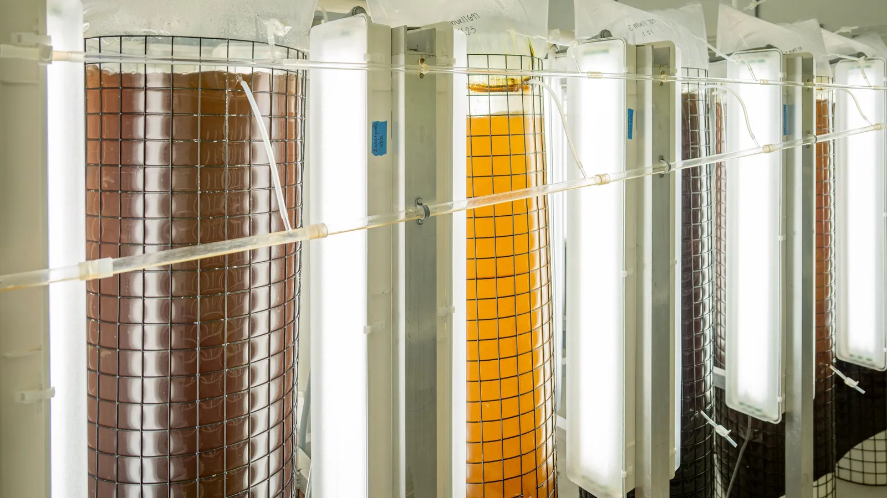

OE/03 · Bioprocessing and bioremediation
CULTURE
Yield and treatment capacity tracked between assays, not after them.

What it estimates
The reading you have is not the thing that fails. Culture productivity is, and no gauge in the plant reports it.
Every process gauge can sit in range while a culture quietly stops converting sugar, or while nitrifiers lose the oxygen demand race. Neither is a reading. Both are ratios between things you measure, and the engine tracks them continuously instead of waiting for the next assay.
Runs on your instruments
No new hardware, no install, no change to how the plant is operated. If it needed you to add sensors, the model would not be doing its job.
Read only
It estimates and forecasts. It connects to no control loop and changes no set point, which is why evaluating it puts nothing at risk.
Every number carries a band
Each state comes with its uncertainty and each forecast with its probability. A number with no band is not a measurement.
Your data stays yours
Evaluation files are deleted afterwards, and nothing becomes anyone else's training set without an agreement that says so.
Where it runs
Bioprocessing and bioremediation.
Metabolic flux and the trajectory toward final yield in a fermenter, and nitrifier activity running ahead of the blower response in a treatment reactor. Same estimator, two process models.
Configurations you can run right now
Each of these is set up in the live demo. Pick the instruments you actually have, set what is on the line, and run it.
Fields this covers
- Precision fermentation
- Cell culture and biologics
- Algae and cyanobacteria
- Enzyme and specialty chemicals
- Cultivated meat
- Activated sludge
- Nitrification and denitrification
- Anaerobic digestion
- Membrane bioreactors
- Industrial effluent
- Scale-up and tech transfer
The method
Three steps. Only the first one changes.
Reconstruct the biology
Write down how the system actually behaves: what reacts with what, how fast, what moves where, what the organisms take up and how the population shifts. This is the only step that changes between an oyster hatchery and a space habitat, and it is where most of our work goes.
Decipher backwards
The estimator runs that model against the sensors already on site and works out the things nothing measures directly, with an honest error bar, every cycle.
Forecast forward
Take that state and run it forward under whatever you are planning to do next. This is where the warning hours come from. You get a forecast with a confidence attached to it, not a red light.
Steps two and three are identical across every Orbital Ecology product. Step one is the process model written for this domain, and it is where the domain work lives.
The record
What has been tested here.
| Status | What was tested | Result |
|---|---|---|
| Complete | IWA BSM1, standard activated sludge benchmark, dissolved oxygen channel | Prediction error reduced 92 percent. Excursions identified more than 12 h ahead. |
| Complete | IWA ADM1, reference anaerobic digestion model, one-step prediction | Error reduced from 163.7 to 0.77. |
| Complete | Dynamic flux balance, E. coli, one-step RMSE across complete runs | RMSE 0.062 to 0.011, a reduction of 82 percent. |
Every completed result is reproducible against a published benchmark or a held-out operating record. The full record for all four products is on the home page.
The rest
One engine, four front doors.
Evaluation
Send one export. We will tell you what it was trying to say.
Send us an export you already keep. We run it blind, with the outcome window hidden from us, then tell you how many hours of warning you would have had, and how often we would have cried wolf.
- No connection to any live system. No change to any control loop.
- No fee, and the file is deleted afterwards.
- You keep the full workings, including where we would have missed.
Validated against the reference models these fields use, and backtested on real commercial operating history. The engine only reads. It estimates and forecasts, and changes nothing in your plant.